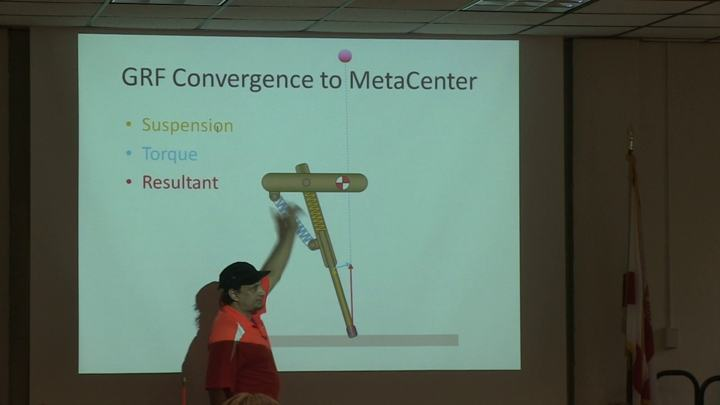
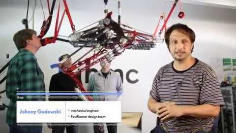

Every swinging leg has a rhythm it prefers. Robots and animals that move with that rhythm, using springs and tendons instead of fighting them, spend far less energy.

35 s
Johnny Godowski: one motor, two modes · FastRunner lecture, Part 6 · open on YouTube · Media: Xobotix / Chance Robotics. Needs internet.
Plain language Push a swing at the right moment and it goes higher with tiny pushes. That right moment is its natural frequency. Johnny's FastRunner adds springs that get stiffer the further they stretch. Then the rhythm speeds up as the motion grows, and a drive that pushes in step with the motion (not by the clock) just “steps on the gas”.
Interactive
Drive a spring: by the clock vs in step
Amplitude0
Oscillation frequency…
Drive…
Dots: steady-state response from harmonic balance (blue = linear, gold = hardening). Pink: where the mass is now.
Your walker's rhythm (from the gait solver)
Leg pendulum half-period…
Walker step time…
Match…
Step rate…
Compass-gait model on a 3° ramp. Longer legs mean a slower natural swing, so a slower walk: T ∝ √l.
Try this
Clock drive, linear spring: slide the frequency through 1.0 and watch the peak.
Turn the hardening spring ON: the peak leans right. Sweep up slowly, then down. Do you get the same amplitude both ways?
Switch to the in-step drive and raise the throttle: the frequency rises by itself. That's Johnny's “step on the gas”.
Change the leg length in the second panel: the step time follows the pendulum.
Graduate layer · EEE 6734 Linear oscillator: ẍ + 2ζω₀ẋ + ω₀²x = F cos ωt, with a peak near ω = ω₀. With a hardening term βx³ (Duffing), the backbone frequency rises with amplitude, the response curve bends right and multiple branches appear (jump phenomenon). Driving with phase locked to velocity (autoresonance) climbs the backbone with no reference trajectory. The throttle F sets the amplitude “shell” (Johnny, Part 3, 00:01). The passive walker shows the linear version: its step time locks near the swing leg's pendulum half-period.
More from the Xobotix channel

24 s
FastRunner: "it moves the most efficient way possible and that's in resonance" · FR IHMC Summary · open on YouTube · Media: Xobotix / Chance Robotics. Needs internet.
From the Xobotix lectures
“We have only one actuator on each leg, one motor only. If it moves slow, the leg swings as a pendulum. But if I excited it twice that frequency, now I excite this other mode.”
Johnny Godowski, FastRunner lecture Part 6 · 02:23 · auto-captions, [corrections] ours
“So we don't have a familiar Bode plot. It leans to the right hard. … All we want is a phase gain in the driving concept … And this thing will just ride up that curve. … So all we do is step on the gas.”
Johnny Godowski, Part 6 · 03:33 · auto-captions, [corrections] ours
“if you can have a spring that is in phase with this actuator you are going to actually pump energy into a system so you are not spending your energy to fight the spring you are working with it”
Quotes are YouTube auto-captions from the Xobotix channel. [Brackets] mark our corrections of misheard words, and timestamps open the video at that spot. Full notes: research/SCIENCE_FROM_LECTURES.md.